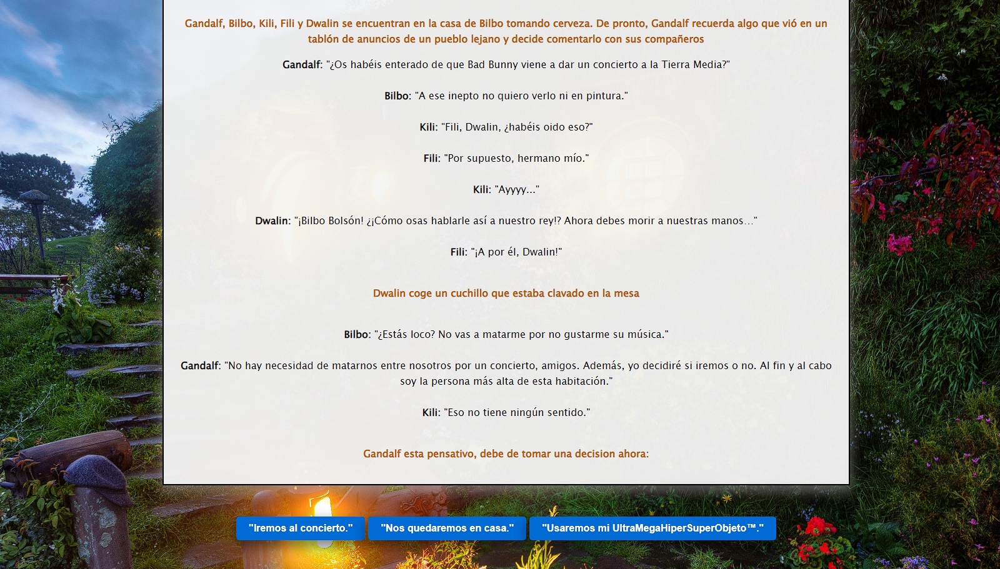
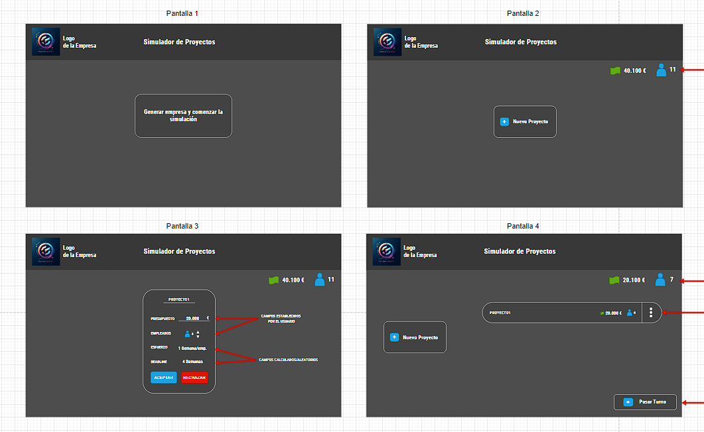

Hemos tenido que realizar una aventura gráfica en JavaScript cuyo enlace es este.
Este proyecto es con el que más he aprendido de todos los que he hecho en DAW. Y aunque soy consciente de que no es perfecto estoy orgulloso de él.
Puedes ver el código detenidamente en el repositorio público: https://github.com/LoouisS/hobbit-cliente

Este proyecto me ha dado varios dolores de cabeza porque nunca supe como enfocarlo, pero lo bueno se hace esperar.
Así que aquí está el enlace. para verlo.
